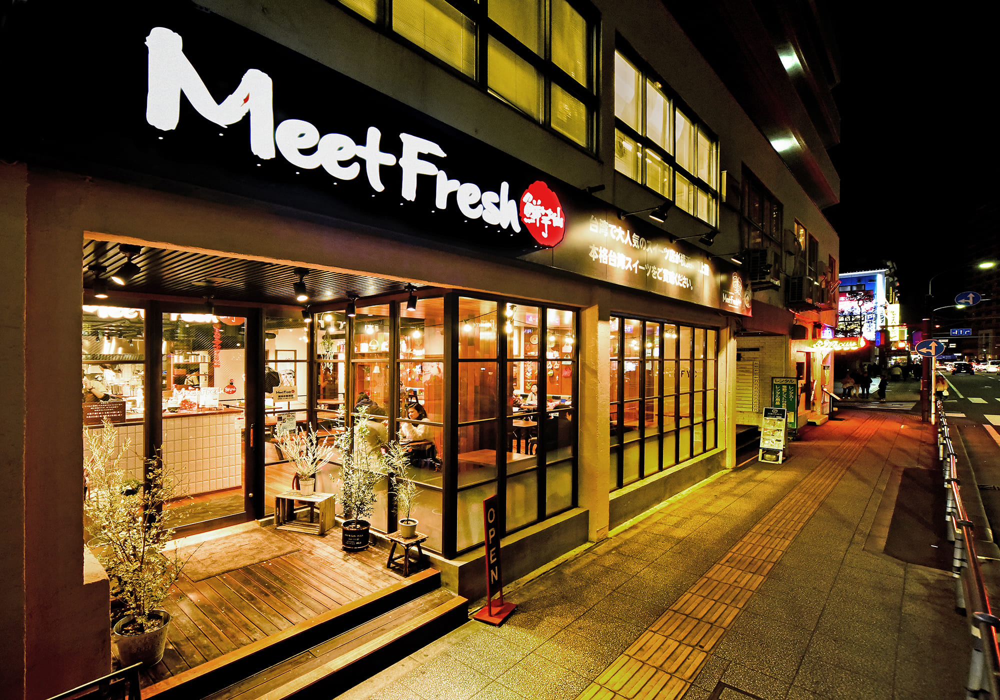
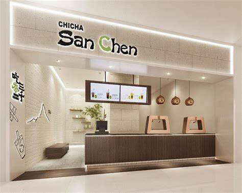
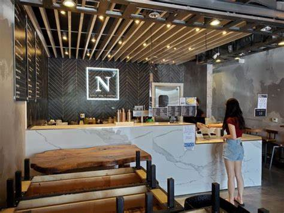

Meet Fresh is a really great option no matter what you're looking for. I especially enjoyed their taro and milk tea options, but their fruit teas are also pretty good. They also have a very wide selection of toppings. In conclusion, it's a fantastic all-around option.
Chicha San Chen offers some of the best tasting boba in the bay area. Their tea has a smooth taste, and while the milk tea taste is prominent, it is never overpowering. Their pearls are also made fresh in-house and are very soft and chewy. However, be warned as their wait times can get very long, going as high as 2 hours at times.
N7 is a really unique boba tea store. The texture of their drinks is really satisfying, especially their fruit tea drinks. It's hard to explain, but they all taste extremely refreshing. Additionally, their store has a lot of stuffed bobas and figurines to play with while enjoying their drinks
